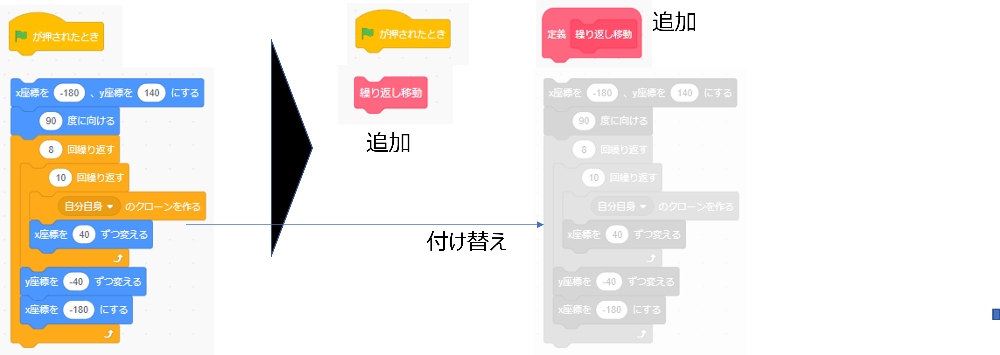

毎回変わる迷路が完成したら今度は、初級はゴールの紙吹雪、中級から自動で追跡してくるハンター、上級者は自分で操作するプレイヤーを開発しちゃうぞ。
柱を縦横（10コｘ8コ）に並べて、柱の間に壁を作ります
背景の［幅:480］と［高さ:360］。横の目盛りをＸ座標、縦の目盛りをＹ座標と呼びます。真ん中がＸ＝０、Ｙ＝０です。
四角形の大きさをととのえる1。大きさは10～15くらいの正方形。
ていねいにマウスで大きさを調整してね。好きな色。形は丸でもいいけどね。
コスチュームの名前は「柱」もしくは「はしら」にする。
柱を置く場所をきめる。
ひとつめの柱の場所は、［X座標 -180］、［Y座標 140］にする。
あとで向きをつかうので、最初は90度に向ける。
横に40ずつ間を開けて、柱を10個並べます
サンプルコードはこの下（自分で出来たら、確認してみよう）
↓
↓
↓
↓
↓
ここまでのプログラム（コード）です。
縦にも40ずつ間を開けて、柱のグループを８つ並べます。
サンプルコードはこの下（自分で出来たら、確認してみよう）
↓
↓
↓
↓
↓
ここまでのプログラム（コード）です。
X座標とY座標で繰り返しクローンができると・・・どんなコトが出来るようになるでしょうか？
棒になる長方形をつくります。柱の間隔が40なので、棒の長さは30～35くらい。
柱と同じスプライトに、新しいコスチュームを追加します（縦7ｘ横32くらいの大きさの四角形）。
コスチュームの名前は「かべ」にする。
★注意★ 柱と同じスプライトにカベを追加するよ。
あとで使う画面の枠もつくっておきます。
四角形を四つ組み合わせて。あとで調整するので大きさはてきとうに。
コスチュームの名前は「枠」にする。
柱と同じロジックで、棒倒しのカベもつくります。
ブロック定義を使って、自分専用のブロックを作る！

クローンされたコスチュームが「カベ」の時だけ、棒を倒します。
棒は倒した。でも全部同じ向き、右側に並んでいるね。
クローンされたとき、候補１～４を選んで、回転してください。
サンプルコードはこの下（自分で出来たら、確認してみよう）
↓
↓
↓
↓
↓
プラットフォームが出来た。ここからは何をする？
プラットフォームとは、共通の土台、共通の舞台、共通のしくみ。